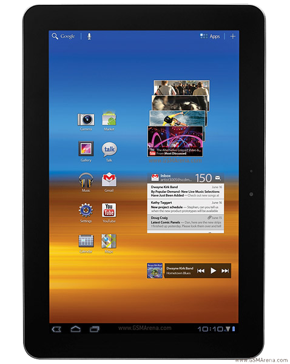

삼성 갤럭시 탭 10.1
1. 외관

삼성전자가 2011년 7월 SK텔레콤, KT를 통해 출시한 태블릿 컴퓨터.
2. 사양
| 프로세서 | nVIDIA Tegra 2 T20 SoC. ARM Cortex-A9 1 GHz MP2 CPU, ULP GeForce 333 MHz GPU | ||
| 메모리 | 1 GB LPDDR2 SDRAM, 16 / 32 GB 내장메모리 | ||
| 디스플레이 | 10.1인치 WXGA(1280 x 800) RGB 서브픽셀 방식의 삼성 Super PLS LCD 멀티터치 지원 정전식 터치 스크린 | ||
| 네트워크 | 기본 | HSPA+ 21Mbps, HSDPA & HSUPA & UMTS, GSM & EDGE, NFC | Wi-Fi 802.11a/b/g/n, 블루투스 3.0 |
| - | - | ||
| 카메라 | 전면 200만 화소, 후면 300만 화소 AF 및 LED 플래시 | ||
| 배터리 | 내장형 Li-lon 7000 mAh | ||
| 운영체제 | 안드로이드 3.1 → 3.2 (Honeycomb) → 4.0 (Icecream Sandwich) | ||
| 규격 | 172.9 x 256.6 x 8.6 mm, 565 g | ||
3. 상세
2011년 2월 14일 MWC 2011 행사에서 공개되었다.
구글에서 태블릿 전용 OS인 허니콤 을 내놓자 삼성전자가 이를 탑재한 제품을 선보였고, 그것이 갤탭 10.1이다. 발표 당시 전작 보다는 아니지만 슬림해지고 가벼워져 휴대성이 높아졌다는 점을 홍보했었다. 하지만..